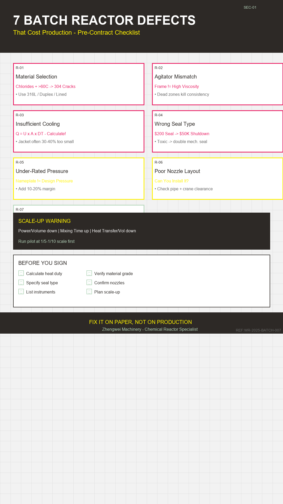

I've been in this business long enough to stop being surprised when a client comes back three months after delivery with a leaking reactor they bought at a lower price elsewhere. I don't enjoy telling them "I told you so." I prefer fixing the problem quietly.
But the patterns repeat. The same mistakes. The same pain.
This article is for chemical engineers specifying batch reactors for the first time, or plant managers who want a sanity check before signing. I'll walk through the defects I see most often, why they happen, and what to ask for.
1. Material Selection That Looks Fine on Paper
A client once told me the medium was "corrosive" and wanted 304 stainless steel. I asked: which acid? What concentration? At what temperature? They didn't know.
Three months later: stress corrosion cracking at the welds. The reactor leaked at the bottom, right where the agitator shaft enters. Production stopped for two weeks.
2. Agitator Type Chosen for "Good Mixing" (Without Thinking About It)
"Uniform mixing" is the most common requirement I see. It's also the vaguest.
A frame agitator looks fine on a drawing. It doesn't move high-viscosity material from the bottom. You get dead zones. Particles settle. Your reaction rate becomes inconsistent batch to batch.
- Impeller type matches your fluid regime (low Re → anchor/propeller; high Re → turbine)
- Baffles are present and correctly sized (usually 1/10 of tank diameter each)
- Clearance from the bottom is adequate for your discharge needs
- Power draw will not exceed the motor rating at maximum viscosity
3. Heat Transfer Area That Is Too Small
This is my favorite defect because it's so easy to miss and so expensive to fix.
The client says: "We need cooling." That's it. No duty calculation. No cooling water temperature. No flow rate.
I run the numbers. Often the jacket area is 30–40% of what's actually needed. The result: the reaction temperature runs away during the exotherm, or the cycle time doubles because you can't cool fast enough.
4. Seal Selection That Trades Safety for Cost
Packing seals are cheaper. They also leak. More than the spec allows.
If your medium is toxic, flammable, or volatile, packing seals are not a valid option. Even single mechanical seals may not be enough for highly hazardous services—go double mechanical seal with a barrier fluid system.
| Packing seal | $200 |
| Double mechanical seal + barrier system | $2,500 |
| Cost of one shutdown to fix a leak | $15,000–$50,000 |
5. Pressure and Temperature Boundaries That Ignore Misoperation
The maximum working pressure on the nameplate is not the design pressure. The design pressure must account for:
- Safe relief valve set point
- Potential reaction runaway (add 10–20% margin)
- Static head of liquid during filling
- Thermal expansion if the vessel can be isolated while hot
I've seen nameplate pressures that were only 1.1× the normal operating pressure. A single misoperation—closing a valve too early—turned that into a near-miss incident.
6. Nozzle Orientation That Makes Installation a Nightmare
A reactor drawing can look perfect. Then it arrives on site and the nozzles don't align with the existing piping. Or the manway is on the side that blocks the crane. Or the instrument connections face the wall.
7. Missing Instruments That You Will Regret Later
Clients often specify just "temperature control" and "pressure gauge." That's not enough.
Minimum Instrumentation for a Production Batch Reactor
- Temperature: reactor bulk + jacket outlet (at least two points)
- Pressure: reactor + jacket (separate gauges)
- Agitator: torque or current monitor (early warning of overload)
- Safety: relief valve + rupture disc (redundant protection)
- Level: sight glass or magnetic level gauge
- Sampling: take-point valve with purge capability
Every missing instrument is a blind spot. Blind spots cause batches to be rejected.
⚠ SCALE-UP WARNING
1–10 L
5–50 m³
Power/Volume ↓ | Mixing Time ↑ | Heat Transfer/Vol ↓
Run pilot at 1/5–1/10 scale first
Final Thought
A batch reactor is not a tank with a motor attached. It's a precision piece of process equipment. Every dimension, every material grade, every seal type has a reason.
If you're specifying one, ask the right questions before the contract is signed. It's much cheaper to change a drawing than to change a production schedule.